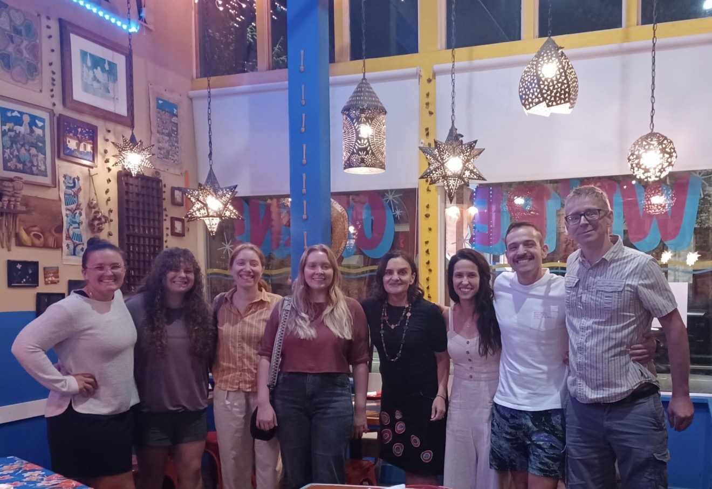
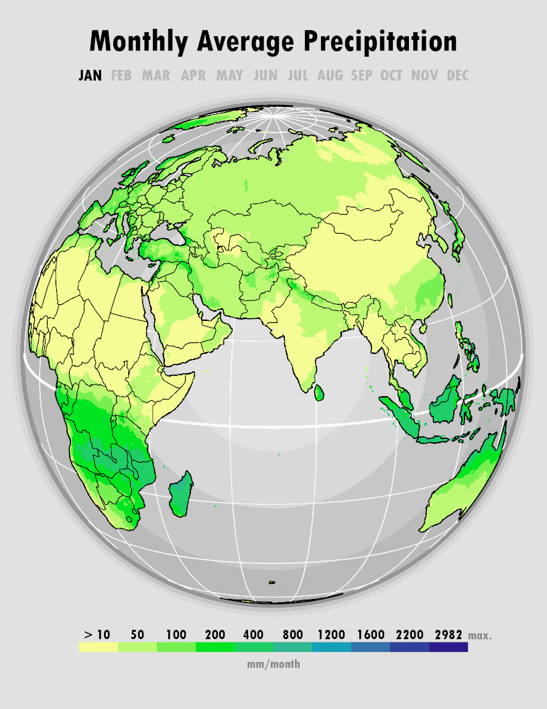
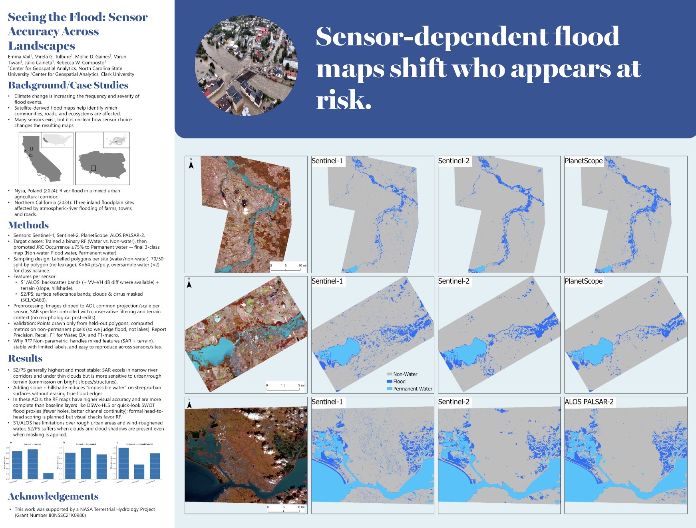

About Me
Hi! My name is Emma and I am currently a Ph.D. student at NC State's Center for Geospatial Analytics. I'm part of the Geospatial Analysis for Environmental Change (GAEC) lab that focuses on leveraging both old and emerging remote sensing imagery for hydrological studies. I am specifically researching how we can use remote sensing techniques to enhance flood mapping, better quantify uncertainty, and improve informed mitigation strategies.

Projects

Sentinel-1 and Sentinel-2 Flood Agreement in Poland
These maps were designed to clearly communicate the spatial agreement between satellite sensors used to observe flooding.

Monthly Average Precipitation
These maps animate global seasonal precipitation patterns using consistent symbology for fair month-to-month comparison.

Sensor Accuracy Across Landscapes
This poster was made to benchmark accuracy assessment across sensors and sites.
Check out my “Dear Data” inspired map!

This map was inspired by the “Dear Data” approach to personal data visualization, using hand-drawn or creative mapping techniques to tell a more personal spatial story.